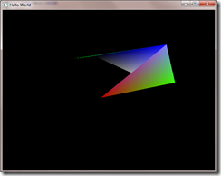
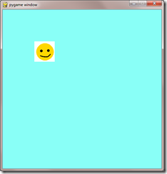

Meetings
This section includes all the 'after-action' reports of the Games Creators Club weekly meetings.
Meetings are held in the evenings at Kenilworth School during term time. The club currently has members from Year 7 to Year 11. If you are a student at Kenilworth School and you would be keen to join, let your form tutor know and they can put you in touch with the organisers.
Alternatively, you can follow along with the meetings and content using the articles posted here.
Animation time!
- Details
- Published on Tuesday, 04 February 2014 21:12
- Written by Edward Powell
- Hits: 833

Firstly we are going to add a python list *inside* the player dictionary. You will remember that the list has the syntax:
| python_list = [item1, item2, item3] |
and we can access the item using an index into the list (don’t forget the indices start from zero):
| item1 == python_list[0] |
Our list is going to hold all the images for our player. There are two frames of animation for four different directions and are named with the following convention: player_direction_frame.png
so when we add our list to the player dictionary and associate with the “images” key, it looks like this:
| player = { |
Hopefully you can see that the images are added in the order
frame 1: left, right, up, down
frame 2: left, right, up, down
Which will be important to remember later.
You can also see an final extra data item at the end of the player dictionary, “direction”, that we will use to keep track of which way our player is facing.
The update player position function now needs to set the direction, which will form part of the index we need to choose the right image from our new list:
| def UpdatePlayerPosition(player, walls): # Only if the marker has not hit a wall do we update the player if player_move_rect.collidelist(walls) == -1: player['rect'] = player_move_rect |
Now we can add a draw function to pull together everything we have put into place.
| def DrawPlayer(player): |
This is a fairly complicated function. animation_step is the variable that will determine how often we will change the image frame – it must be a multiple of player["speed"] to ensure that we will actually hit these steps. Initially we get the image_index directly from the direction. we know that we are moving left/right if the index is less than 2 and we use the left-hand position of the player rectangle to pick the image frame we’re going to use. We divide it by the animation_step to find give us our horizontal position in ‘steps’ (the // is a special divide that will round the result to a whole number) then we see if it is an odd or even step using modulus (%) 2. If it is an odd numbered step then we bump the image_index up by 4, which if you remember how the image list was ordered from above, will now make it one of the frame 1 images.
Essentially we do the same thing, but based on the position of the bottom of the player rectangle if we are moving up/down.
In our main loop we can now just add calls to these functions:
| UpdatePlayerPosition(player, walls) DrawPlayer(player) |
the game loop is *a lot* neater, but more importantly we can now improve or replace these functions very easily without affecting any other parts of our game.
Gathering our data together
- Details
- Published on Tuesday, 04 February 2014 19:41
- Written by Edward Powell
- Hits: 786

.
Now is a good time to step-back and make our lives a bit easier with
some restructuring before we go onto to add more functionality. We
learned about functions in the last meeting, which allow us to reuse
important operations and logic, but now we need to look at our data.
Replacing Individual Data Elements
Our current player requires four separate data elements in order to manage movement and drawing
| player_start_rect = pygame.Rect(0,0, block_size, block_size) |
We are going to strip these out and replace them with a single data element with each sub-element neatly grouped under it. To do this we are going to use a Dictionary container that will allow us to use a label to access each item from a new, single, player element.
| player = { |
Now, everywhere in our code where we were having to remember and use each separate data item we can use our neater container:
| player_rect player_start_rect speed | player['rect'] |
But even more usefully we can now create some cool functions that take our new player dictionary – or indeed other dictionaries provided they have the same the items in them. This is a *very* useful way to simplify our main loop code with function calls like:
| UpdatePosition(player) Draw(player) |
instead of the swathes of code currently required.
C++ Coding Ninjas
- Details
- Published on Sunday, 27 October 2013 09:22
- Written by Edward Powell
- Hits: 986
For the Code Ninjas in the club, we took a look at C++ for the first time. This is a *massive* new challenge, so don’t feel bad if you found it a bit daunting!
Unlike python, C++ is a compiled language, which means we can’t avoid looking at how the code that we write is actually converted into the code that the computer truly understands. In python this process goes on too, but we just don’t see it. In addition, we are expected to understand the computer’s underlying structure and resources (in particular its memory) and manage these directly for ourselves as we write our program. However, in return for this additional complexity C++ is one of the few remaining ‘System Languages’ still in common use – this means that you could even write an operating system (such as Windows itself) using a language like C++. Indeed Android, Linux and the like have mostly been written using C (a closely related pre-cursor of C++).
{kind=link}
Because C++ requires quite a few steps to get from our source code (the text we write) to byte code (the code the computer actually runs) it makes life a lot easier if use an Integrated Development Environment (IDE) to work in – provided we have a compiler and linker though, we could (and probably will at some point, just to prove it) do everything we need from simple text editor – even notepad!
The IDE we’ve settled on for now is CodeBlocks and this includes GCC compiler and linker see the tools and technology section for download info.
We will have a lot of conceptual ground work to cover over the next few weeks, but I want to have something visual for you to tinker with so I skipped over *a lot* of topics and we looked at single page of code that made use of two existing libraries – GLFW & OpenGL. GLFW allowed us to make a Window and run our simple game loop, then OpenGL provides the 3D drawing commands we need to put stuff on the screen. The process of incorporating these libraries will be covered again. But the important thing I highlighted was that the key concepts of the code itself were almost identical to pygame:
- Initialise the window,
- Start a while loop that runs until the window is closed (the game loop)
- Within the loop:
- Collect the messages from Windows (otherwise it thinks we are dead, or at least ‘Not responding’
- Draw our graphics.
Simples!
Pygame Graphics
- Details
- Published on Sunday, 27 October 2013 08:39
- Written by Edward Powell
- Hits: 926
Thanks to the efforts of the IT staff at the school (cheers Manjit & Josh, we really appreciate it!) this week’s meeting was the first one we’ve run without having to use Raspberry Pi’s for our python programming. Not only was this easier to organise, but it was also more productive and you all now have access to your own files and projects via the school network.
So in this session we had a little refresher on variables, then we cracked straight on with creating our own sprite (using Paint.net) and then rendered it on the screen using the pygame library.This process uses the command ‘Blit’, which is short for a block image transfer. As we will see in later sessions, this is the mainstay for rendering nearly all your graphical game elements. Early computers that were aimed at running games had a dedicated chip whose sole role was to perform these fast copies of image data blocks to the video memory area from which the screen display is drawn. On our modern computers using pygame the process is still being performed by an entirely independent computer-within-the-computer called the Graphics Processing Unit (GPU) in order to make it lightning fast.
{kind=link}
Don’t forget that if you have access to a computer at home, you can install python, pygame & Paint.net for free – go to the tools and technology section for links. You should also be able to log in to the school VLE and be able to access and update your files from home.
Meeting 11- Summer-term Studio Start-ups!
- Details
- Published on Monday, 15 April 2013 12:09
- Written by Edward Powell
- Hits: 971
Last term we learned the basic skills we needed to write a game using Python & Pygame. This term we are going to put those skills into practice, from first principles, by designing and creating our own games.
To start with, we divided into teams to form our own ‘game studios’. We chose names, designed logos and began planning our first games. We are going to advertise our games using our own websites.
The studio sites created so far are:
| Alex, James & Noah | ||
| Emily & Cecilia | ||
|
| Lewis & Santi |
{kind=link}
Click on the logos to follow their progress on their own webpages – we will be begin writing these using HTML and javascript next week.